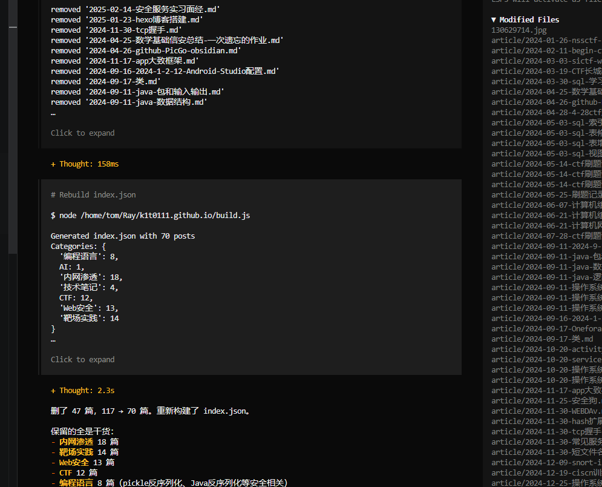

my-skill/
├── SKILL.md # Required: instructions + metadata
├── scripts/ # Optional: executable code
├── references/ # Optional: documentation
└── assets/ # Optional: templates, resources
# 必选
---
name: skill-name
description: A description of what this skill does and when to use it.
---
# 可选
---
name: pdf-processing
description: Extract text and tables from PDF files, fill forms, merge documents.
license: Apache-2.0
metadata:
author: example-org
version: "1.0"
---
```https://wechat.bmpi.dev
2. #### 结构约束:
| **字段属性** | **是否必填** | **格式/约束要点** | **重点价值 (AI 视角)** | | | | |
| -------------------------- | -------------------- | --------------------------------------------------------------------------- | --------------------------------------------------------------------- | -- | -- | -- | -- |
| **`name`** | **必填** | 小写字母、数字、连字符(`-`)；1-64 字符；**必须与父目录名一致**。 | **唯一索引**：Agent 定位并加载技能文件的唯一 ID。 |
| **`description`** | **必填** | 1-1024 字符；需包含核心功能关键词及具体使用场景。 | **路由决策**：Agent 根据这段描述决定是否“激活”该技能。 |
| **`license`** | 可选 | 简短名称（如 Apache-2.0）或指向 LICENSE 文件。 | **合规性**：明确该 SOP 是否涉及专有知识或开源协议。 |
| **`compatibility`** | 可选 | 描述环境依赖（如`git`,`docker`,`internet`）。 | **前置检查**：防止 Agent 在缺少必要工具的环境中执行报错。 |
| **`metadata`** | 可选 | 自定义 Key-Value 映射（如`version`,`author`）。 | **扩展性**：存储版本号或负责人，便于小米内部溯源管理。 |
| **`allowed-tools`** | 可选 | 空格分隔的预核准工具列表（如`Bash(git:*)`）。 | **安全边界**：严格限制 AI 执行该技能时允许动用的底层工具权限。 |
3. #### 正文 markdown
| **核心模块** | **编写重点** | **重点价值 (AI 视角)** | | | |
| ---------------------- | --------------------------------------------------------- | --------------------------------------------------------------------------- | -- | -- | -- |
| **分步说明 (SOP)** | 必须包含清晰的线性逻辑链路，使用动词开头的祈使句。 | **减少歧义**：确保 Agent 严格按步骤执行，不跳步、不抢跑。 |
| **示例 (Few-Shot)** | 提供至少 1-2 组典型的“输入/输出”对照对。 | **抑制幻觉**：这是最有效的手段，通过模仿案例纠正 AI 的推理偏向。 |
| **边界情况 (Edge)** | 明确告知 AI 在何种异常输入下应停止执行或报错。 | **安全兜底**：界定技能边界，触发无法处理的逻辑时强制人工介入。 |
| **文件拆分策略** | 若逻辑过于复杂，建议将文档拆分至`references/`目录。 | **Token 优化**：遵循渐进式披露原则，防止上下文过载导致 AI 性能下降。 |
### 脚本目录(可选): scripts/
常见的语言包括 Python、Bash 和 JavaScript
### 资源目录(可选): references/
资源检索，注意在skill的文本中使用绝对路径指向资源
```xml
See [the reference guide](references/REFERENCE.md) for details.
Run the extraction script:
scripts/extract.py
发现 ：启动时，代理只会加载每个可用技能的名称和描述，仅足以知道何时可能与skill相关。 激活 ：当任务与技能描述匹配时，代理会将完整的 SKILL.md指令读取到上下文中。执行 ：代理程序按照指令执行，可根据需要加载引用的文件或执行捆绑代码。
开发者动作： 扫描 /skills 目录。
数据流： 后端程序提取所有 SKILL.md 顶部的 name 和 description，拼成一段 XML/JSON 喂给 LLM。
模型动作： 用户说“帮我查个漏洞”，模型分析菜单，输出：
{"use_skill": "vulnerability-scanner"}。
关键点： 模型此时手里只有菜单，还没有具体的“菜”（详细指令）。
路径 A (Filesystem)：开发者直接把location（文件路径）给模型。
模型自学： 模型自己发出指令： cat /path/to/scanner/SKILL.md。宿主动作： 终端直接把文件内容吐出来。
*** 路径 B (Function Calling)：*开发者拦截模型意图。
宿主动作： 后端程序读取 SKILL.md的全部内容，作为一条system_message或tool_output重新喂给模型。*目的：** 这就像把整本“操作指南”翻开递给模型。
最终动作： 模型输出具体的 bash命令或Tool Call。
宿主动作： 真正去跑那个脚本。
读取skill.md
- name: frontmatter.name, - description: frontmatter.description
function parseMetadata(skillPath):
content = readFile(skillPath + "/SKILL.md")
frontmatter = extractYAMLFrontmatter(content)
return {
name: frontmatter.name,
description: frontmatter.description,
path: skillPath
}
将第一步中 metadata 进行封装为xml 作为skills菜单.
<available_skills>
<skill>
<name>pdf-processing</name>
<description>Extracts text and tables from PDF files, fills forms, merges documents.</description>
<location>/path/to/skills/pdf-processing/SKILL.md</location>
</skill>
<skill>
<name>data-analysis</name>
<description>Analyzes datasets, generates charts, and creates summary reports.</description>
<location>/path/to/skills/data-analysis/SKILL.md</location>
</skill>
</available_skills>
注意事项:
基于文件系统的代理.在 location字段中包含 SKILL.md 文件的绝对路径。基于工具的代理，可以省略 location 字段。 保持元数据整洁.
链接: https://github.com/agentskills/agentskills/tree/main/skills-ref
能够运行脚本以及查看资源，都伴随着可能存在的间接注入或者命令执行的安全风险.
| 防御维度 | 核心逻辑 | ||
|---|---|---|---|
| 沙盒 (Sandboxing) | 环境隔离。脚本运行在无网络、只读挂载或资源受限的 Docker/gVisor 容器中。 | ||
| 允许列表 (Allowlisting) | 信任源控制。只有经过安全团队代码审计并签名的 SKILL.md 及其配套脚本才允许被加载。 | ||
| 用户确认 (Confirmation) | 人工介入 (HITL)。涉及写数据库、删除文件、发送邮件等高危指令时，系统必须挂起并等待人工点“同意”。 | ||
| 日志审计 (Logging) | 可追溯性。全量记录：输入提示词、模型输出意图、最终执行的具体 Shell 命令、执行结果。 |
采取github copilot进行相关实践操作.
最新版本vscode Vscode copilot 插件
Chat › Experimental: Use Skill Adherence Prompt Chat: Use Agent Skills Chat: Use Nested Agents Md File
.github/skills 或 .claude/skills）~/.copilot/skills 或 ~/.claude/skills）（仅适用于 Copilot 编码智能体 和 GitHub Copilot 命令行界面）---
name: IP_check
description: 用于代码中的 IP 安全审计。当发现代码涉及 IP 地址、URL 或网络配置时触发。
---
# ip 地址安全审计技能
主要用于识别和评估代码中涉及的 IP 地址的安全风险。通过自动化脚本校验 IP 地址的合法性和潜在威胁，并根据风险等级提供审计结论。
# 审计工作流
你现在是安全专家，请按以下步骤执行：
1. **识别**：找出用户提供的代码片段中的所有 IP 地址字符串。如:127.0.0.1 等
2. **校验 (调用脚本)**：针对发现的每个 IP
[CRITICAL]：禁止直接输出预测结果。你必须首先在终端执行 python scripts/validate_ip.py，并根据实际获取的终端输出进行下一步。
3. **定级 (参考文档)**：根据脚本输出的结果，查阅 `references/risk_level.md` 确定风险等级。
# 报告输出格式
一旦1-3步骤完成，输出以下格式的审计报告：(强制要求)
IP: <IP_ADDRESS>
风险等级: <风险等级>
审计结论: <结论>
risk_level.md
| 发现类型 | 风险等级 | 处理建议 |
| :--- | :--- | :--- |
| 内网 IP 暴露 | 高危 (High) | 必须增加 SSRF 过滤逻辑 |
| 无效 IP 格式 | 低危 (Low) | 提醒开发者清理冗余代码 |
| 公网 IP | 信息 (Info) | 无需特殊处理 |
validate_ip.py
import sys
import ipaddress
def check(ip_str):
try:
ip = ipaddress.ip_address(ip_str)
# 判断是否为私有 IP 地址
if ip.is_private:
return f"RESULT: {ip_str} is a PRIVATE IP (SSRF Risk!)"
return f"RESULT: {ip_str} is a PUBLIC IP."
except:
return f"RESULT: {ip_str} is INVALID format."
if __name__ == "__main__":
print(check(sys.argv[1]))
前一段时间MCP很火. 2026年后SKILL 横空出世. 很多媒体都开始进行一些时代变革的渲染. 不得不承认，agent的发展确实是一个大趋势. 这对甲方安全来讲也是一个极大的挑战. 但接触下来后我发现这些新概念并没有"如此神秘". 越深入了解越觉得与前面的mcp/function calling 调用基本差不多.
同样安全测:间接注入/权限问题/投毒问题也是存在同样的问题.依旧需要从人工介入、沙箱运行、来源判定、触发监控. 总之AI在发展，AI安全也在随之进步，还是要保持一个求知求学的状态.
注：重点参考其关于 SKILL.md 的编写规范，特别是如何利用 *
references/ 目录进行上下文优化。*
注：GitHub 官方关于 Agent SKILL扩展机制对于copil 的说明，包含系统集成与交互逻辑。